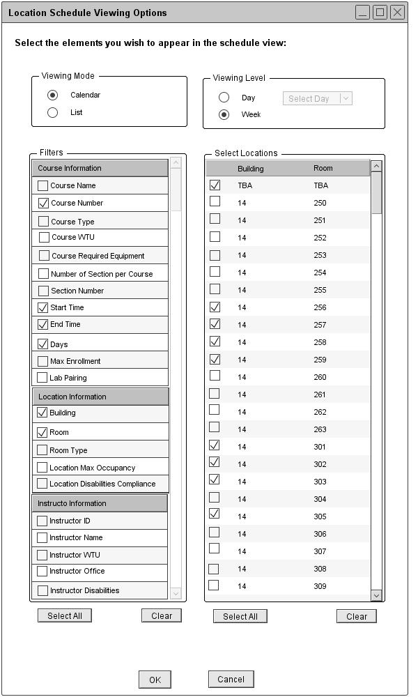
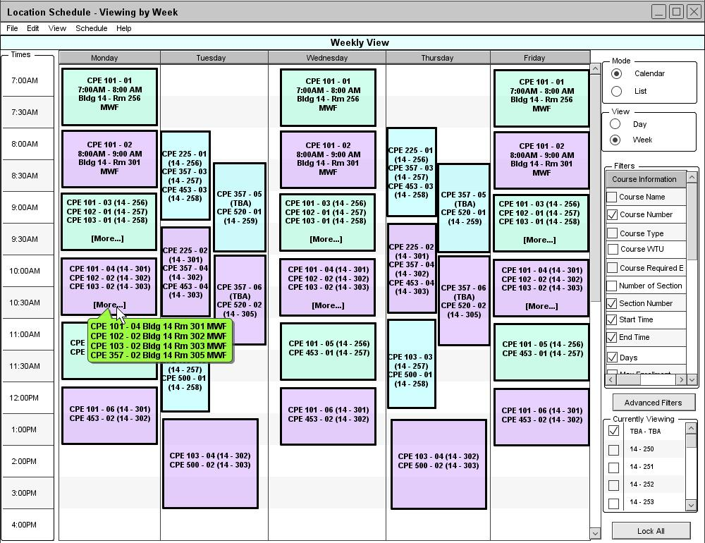

Figure 79 is a filled in version of figure 68.

Figure 79: Viewing a location schedule in the calendar mode
From the user's selections in figure 79, the Schedule Tool displays a weekly location schedule view in the calendar mode as shown in figure 80.

Figure 80: Calendar Mode of Weekly Location Schedule
The Course Number, Section Number, Start Time, End Time, Building, Room and Days filter options are automatically selected and displayed on the schedule. When viewing a weekly location schedule in the list mode, the data is sorted by days, building number, room number, and then start time by default. Under the location schedule view, the popup displays the course number, section number, building number, room number, and days information.The weekly location schedule view is very similar to the weekly course schedule view.